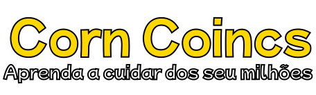

<header class="cabecalho">
    <a href="../missoes/" class="botao-voltar">
      
    </a>

    

    <button class="botao-som" id="botaoSom">
      <i class="fa-solid fa-volume-high"></i>
    </button>
  </header>

  <main>

    <div id="forms"></div>
    <form class="register-form"> <!-- Se quiser colocar um logo aqui futuramente -->
      <h1 class="title">Jogo da Memória</h1> 
      <br>
    
      <a href="../memorygame/memorygame.component.html"  class="btn-register">Jogar</a>
    </form>
  </main>

  <audio id="musicaFundo" loop autoplay>
    <source src="../sound/Music_fx_relaxing_ukulele_chill_steven_univer.wav" type="audio/wav">
  </audio>

  <footer>
    © Corn Coincs — Todos os direitos reservados.
  </footer>